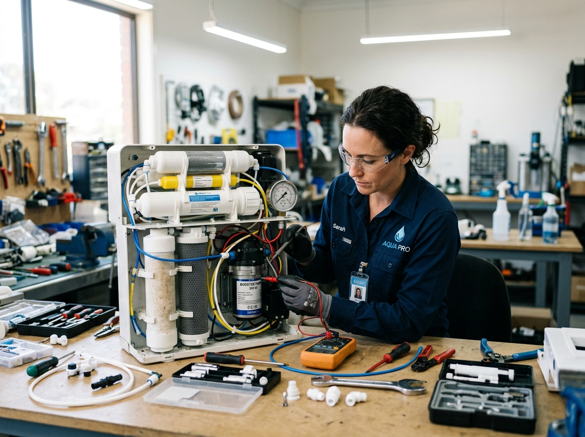
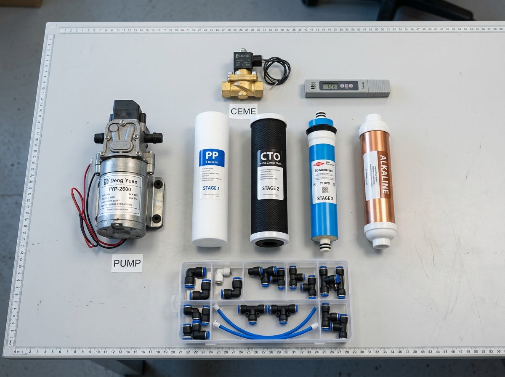

RO Purifier Repair & Troubleshooting Guide
Understanding Common Symptoms, Safe Checks & When to Call a Technician
RO Purifier Troubleshooting & Diagnostic Guide
When an RO water purifier malfunctions, understanding the common warning signs can help you identify whether a simple maintenance step is required or whether professional doorstep diagnostic inspection is needed.
Note: Multiple factors can contribute to any fault. Our team can assess the system and recommend the appropriate service on-site.

1. Why Is My RO Purifier Not Working At All?
If the purifier does not turn on, no lights are illuminated, and the booster pump does not run, possible areas requiring technical assessment include:
- ✓ Power Supply / SMPS: The 24V or 36V DC electrical adapter may have suffered a voltage surge.
- ✓ Low Pressure Switch (LPS): If incoming raw water pressure is too low, the LPS shuts off the system to prevent dry-run pump damage.
- ✓ Storage Tank Float Switch: A jammed or faulty microswitch can falsely signal that the storage tank is already full.
- ✓ Choked Pre-Filters: Complete sediment blockage can drop inlet pressure below operating threshold.
2. Why Is My RO Water Flow Low or Filling Slowly?
A gradual decline in purified water delivery is one of the most frequent customer complaints in Dharmapuri:
- ✓ Sediment Filter Congestion: Raw silt and pipe mud restrict raw water feed volume.
- ✓ Scaled RO Membrane: Dissolved mineral buildup inside the microscopic membrane pores restricts permeate flow.
- ✓ Weak Booster Pump Pressure: Worn pump diaphragms or low voltage reduce the necessary pressure (typically 60–80 psi) needed for reverse osmosis.
- ✓ Low Feed Water Pressure: Low overhead tank water level or partially closed feed valve.
3. Why Is My RO Purifier Leaking Water?
Water dripping inside the cabinet or around external bowls can cause damage if ignored:
- ✓ Pre-Filter Bowl O-Ring: Rubber seal drying, misalignment, or micro-cracks in the plastic bowl.
- ✓ Push-Fit Quick Connectors: High internal pressure or vibration can loosen plastic collet clips.
- ✓ Membrane Housing Cap: Thread leakage or warped gasket rings under sustained booster pressure.
4. Why Does Reject Water Run Continuously?
If water flows continuously into the drain even after the purified water tank is completely filled, the internal Solenoid Valve (SV) or Auto-Shut-Off Valve (ASOV) may have failed, allowing feed water to pass unchecked.
Tested Genuine Components
When replacing components during service visits, our technicians use factory-tested booster pumps, food-grade solenoid valves, and high-rejection membranes to ensure long-term durability.
- ✓ Heavy-duty booster pumps with pressure testing
- ✓ Certified food-grade inline filter cartridges
- ✓ Calibrated digital TDS measurement before & after

Basic Checks Before Requesting Service
- ✓ Verify that the power outlet has electricity and the switch is on.
- ✓ Ensure the main water inlet ball valve is fully open.
- ✓ Check that the reject water pipe is not kinked, crushed, or submerged.
Do not attempt to open electrical adapters or pressurized pump heads without proper tools. Contact VARUN AQUA TECH at +91 88380 55968 for doorstep technical assessment.
Schedule RO Service or Consultation
Contact VARUN AQUA TECH for prompt RO sales, installation, repair, maintenance or replacement services in Dharmapuri and surrounding areas.
Sales & Service Center:
India1 ATM, Harur Main Road, near Dharmapuri, Bosinaickenhalli, Tamil Nadu - 635303, India
Direct Phone: +91 88380 55968
Hours: Open 24 Hours - Monday to Sunday
Service availability is confirmed directly with our team based on your exact location and requirement.